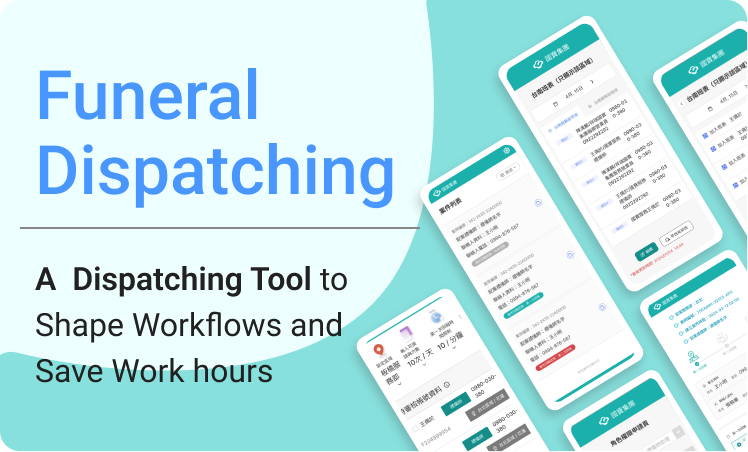
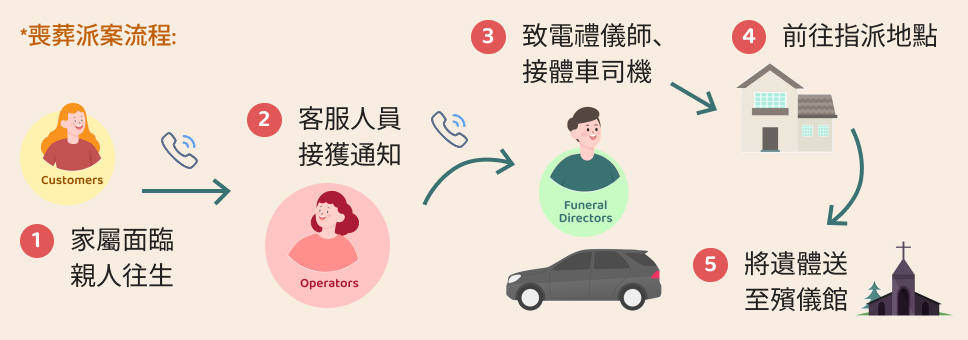
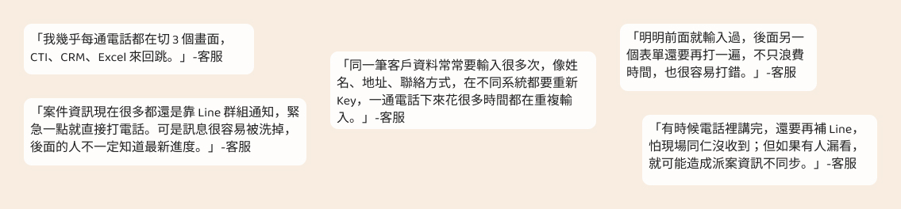
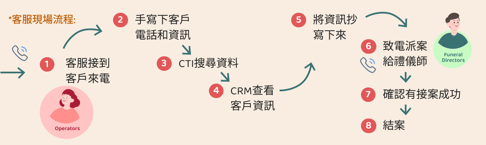
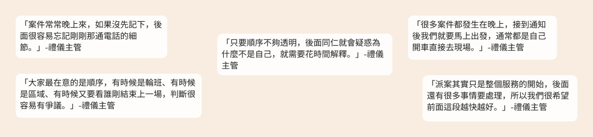
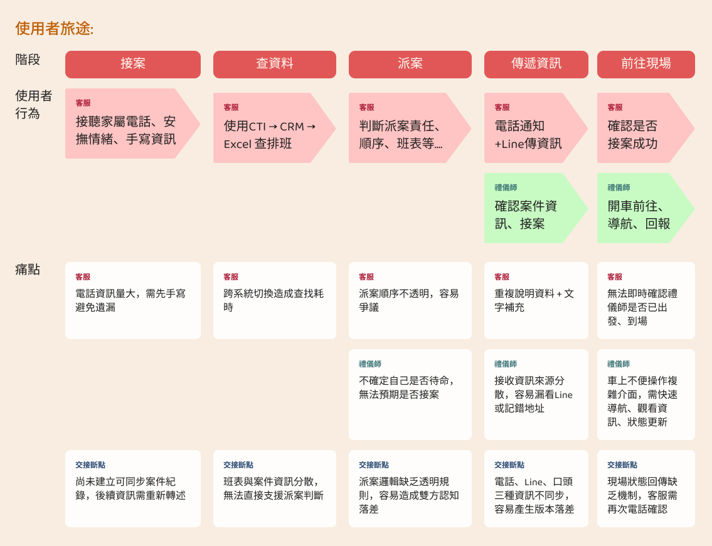

Project Overview
Establishing operational order through digitization to improve service quality and brand reputation
In recent years, the funeral service industry has faced a severe labor shortage, especially during late-night shifts when staffing is even more limited. As a result, dispatch operations heavily relied on customer service agents to coordinate resources in real time.
In the existing workflow, completing a single dispatch took an average of 15 minutes, with critical information primarily communicated through phone calls and verbal handoffs. In highly emotional situations where families are experiencing grief and anxiety, any delay or information loss could directly affect the service experience, potentially leading to case transfers and damaging the company’s reputation within social and religious communities.
To address this, the project digitized the dispatch workflow by restructuring how information and resources are handed off across roles. This reduced manual communication costs, improved dispatch efficiency and service quality, and allowed staff to focus on higher-value tasks such as family consultation.

*Funeral dispatch
Funeral dispatch refers to the process where, upon receiving a family notification, the funeral customer service team immediately assigns the response team—including transport vehicles, funeral directors, and assistants—to move the deceased to the mortuary.
My role:
UX/UI designer
Time:
11/2023 - 02/2025 (16 months)
Duties:
User Research, Flowchart, Wireframing, Prototyping Tests, UI Mockup Design
Team Size:
1 PM, 1 FE, 2 BE, 1 DB engineer, 1 tech consultant, 1 UI/UX Designer (my role)
Business Goals
Improve information accuracy, service quality, and brand trust
Through workflow digitization, we aimed to improve dispatch efficiency and information accuracy, ultimately enhancing the family service experience while strengthening brand trust and reputation.
To measure product impact, we defined the following KPIs:
Business MetricsTo achieve these goals, we redefined role responsibilities and introduced digital tools into the workflow. Dispatch information was automatically created through the CTI and CRM systems, then synchronized to the funeral director’s mobile device. Personal details such as addresses were directly linked to Google Maps, reducing communication overhead and accelerating dispatch speed.
User Research
Collecting qualitative feedback to understand workflows and pain points
To better understand the real working conditions of customer service agents during the early dispatch phase, we conducted contextual inquiries through on-site observation and in-the-moment questioning.
・2 sessions
・1 hour each
Observation Focus

Key Insights

To further understand the downstream dispatch process and the pain points faced by funeral directors, we conducted two semi-structured interviews with the funeral operations manager.
2 sessions
1 hour each
Interview Insights

After synthesizing the inquiry and interview data, we mapped the current user journey and information flow, identifying key breakdown points in the operational process.

Pain Points & UX Goals
Core Pain PointsUX Success Metrics
Design Output
We used a priority matrix to define the product roadmap, with the automated reporting system as the top priority because it directly solved manual note-taking errors and reduced CS agents’ system-switching burden.
Subsequent phases focused on deeper system integrations to address user needs across each stage of the workflow.
To ensure funeral directors could receive and report dispatch information while moving quickly—such as in a vehicle or en route—we prioritized mobile as the primary platform, optimized for low-connectivity environments.
To eliminate the need for customer service agents to switch between systems, CTI and CRM data were integrated.
CS agents only needed to enter essential customer needs in CTI, while detailed information entered in CRM was automatically synchronized into the dispatch platform.
To reduce delays caused by manual decision-making and eliminate fairness disputes, the dispatch system automatically called funeral directors based on predefined schedules and rotation rules.
Reflection & Iteration
In the later development stage, we conducted:
・4 usability tests
・5 user scenario tests
We discovered that around 6% of funeral directors, particularly Android users, had already significantly enlarged their device font settings and were less familiar with smartphone interactions such as zooming or scrolling.
Although this represented a small portion of users, they became noticeably anxious during task completion. To support them, we introduced font size adjustment controls.
After launch, we continued receiving feedback from different user roles, including CS agents and funeral directors. While these needs occasionally conflicted, it also indicated that the product had become deeply embedded in real workflows.
During testing, users are often only “trying” the product and may not fully explore all edge cases. However, once the system begins to directly impact work efficiency, users become far more proactive in surfacing needs and suggestions.
This project reinforced an important lesson:Product launch is not the end, but the beginning of the next design cycle.Continuously collecting user feedback and iterating on the product is essential for long-term success.